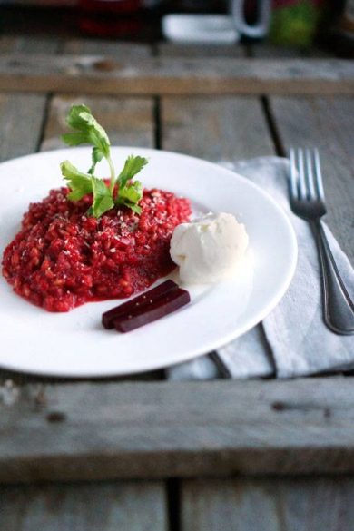

🥘 Свекольное перлотто с ванильным морожини
📋 Ингредиенты
- Перловка — 100 г
- Свекла — 1 крупная (≈250 г)
- Лимон — 1 шт. (цедра)
- Сельдерей — 1 стебель
- Лук репчатый — 1 шт.
- Овощной бульон — 1 л (горячий)
- Оливковое масло — 30 мл (≈2 ст. л.)
- Пармезан тёртый — 50 г
- Ванильное мороженое — 2 шарика (по желанию)
- Соль, перец — по вкусу
👩🍳 Приготовление
- Сварите свеклу. Разрежьте свеклу пополам (так быстрее). Варите в подсоленной воде до мягкости — нож должен входить легко. Слейте воду, но не выливайте её (она пригодится для пюре). Остудите, очистите.
- Подготовьте остальное. Мелко натрите цедру лимона. Нарежьте сельдерей тонкими кубиками, лук — мелко. Натрите пармезан.
- Свекольное пюре. Нарежьте варёную свеклу кусочками, поместите в блендер. Добавьте немного воды от варки и пробейте до гладкого пюре. Отложите.
- Обжарьте базу. В сотейнике разогрейте оливковое масло. Обжарьте лук и сельдерей до прозрачности (3–4 минуты), не зажаривайте.
- Добавьте перловку. Всыпьте перловку, перемешайте и прогревайте 2 минуты, чтобы крупа впитала масло и ароматы.
- Подливайте бульон. Как с ризотто: вливайте по половнику горячего бульона, постоянно помешивая. Ждите, пока жидкость почти полностью впитается, затем добавляйте следующий половник. Процесс займёт около 30–35 минут (перловка варится дольше риса).
- Добавьте цедру и пюре. Когда перловка станет почти мягкой (минуты за 3 до готовности), вмешайте лимонную цедру и свекольное пюре. Продолжайте помешивать.
- Финиш с пармезаном. За 1–2 минуты до конца добавьте тёртый пармезан и хорошо перемешайте. Масса станет кремистой. Жидкости должно остаться совсем немного.
- Подача. Выложите перлотто на тёплую тарелку. Если решитесь — сверху положите шарик ванильного мороженого. Оно контрастирует с тёплым, слегка сладким перлотто — необычно, но вкусно! Если сомневаетесь — просто подайте без мороженого, посыпав ещё пармезаном.
Перловка — на любителя, но в этом рецепте она звучит по‑новому. Смелых — угощайтесь с мороженым! 🇮🇹🍧
